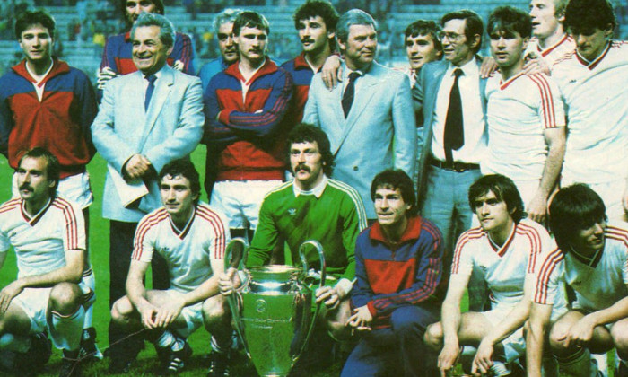
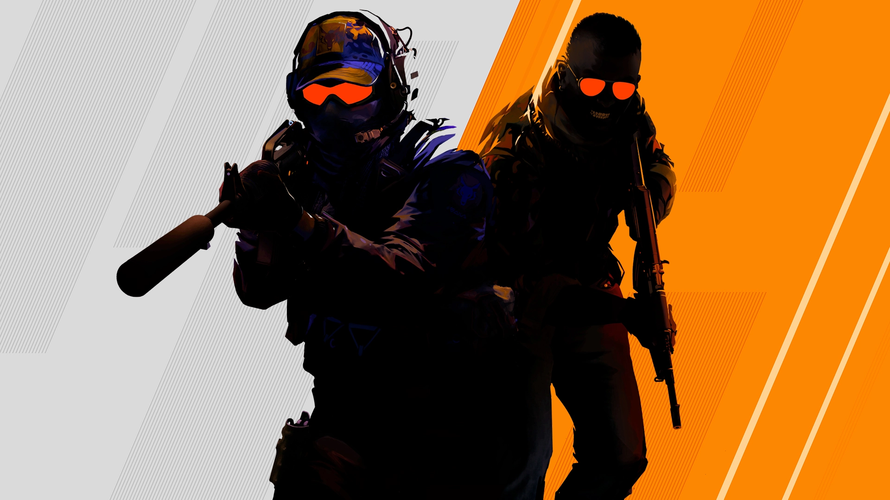
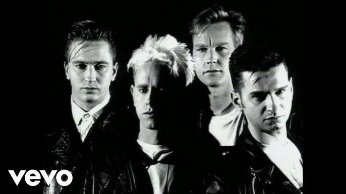

Hobbies

Football
Football is one of my biggest passions since childhood.

Traveling
I enjoy traveling to diffe.

Gaming
Gaming has developed my teamwork and communication skills.

Music
Music is a big part of my life, developing my artistic side.